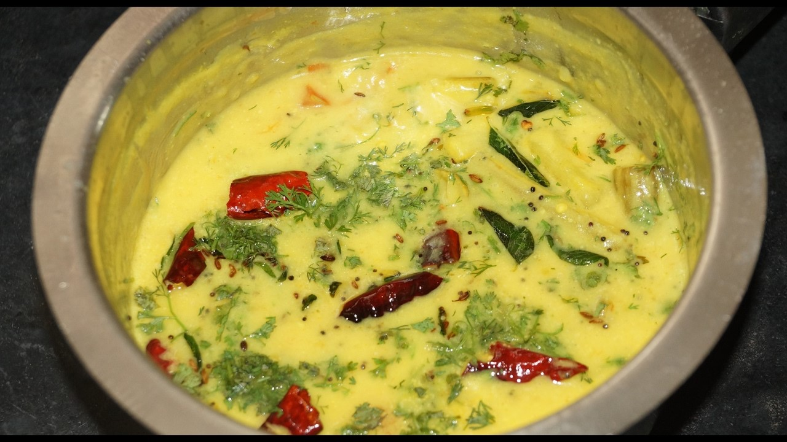

Tempered yogurt

Description
Hearty yogurt dish tempered with fat, spices and herbs
Ingredients
- Plain greek yogurt- 250 Ml
- Tumeric- 1/4 Tbs
- Onions- 250 Gms
- Fresh thai chillies- 3 Nos
- Garlic- 4 Cloves
- Fresh curry leaves- 1/2 Handful
- Tempering spices
- Mustard seeds 1/2 tbs
- Cummin seeds 1/2 tbs
- Chana Dal 1/2 tbs
- Moong Dal 1/2 tbs
Steps
- Roughly mash the chillies, garlic and onions in a mortar and pestel
- In a bowl add in the yogurt and beat it with a whisk until smooth
- Add oil into a pan and wait until its hot
- Add in the tempering spices and sautee until fragrant
- Add tumeric and sautee for 30 seconds
- Add the roughly mashed onions, garlic and chillies to the pan
- Sautee the until onions turn translucent
- Turn off the heat and add half a handful of curry leaves and sautee
- Add the tempered oil to the yogurt bowl and mix until completly incorporated and enjoy!!